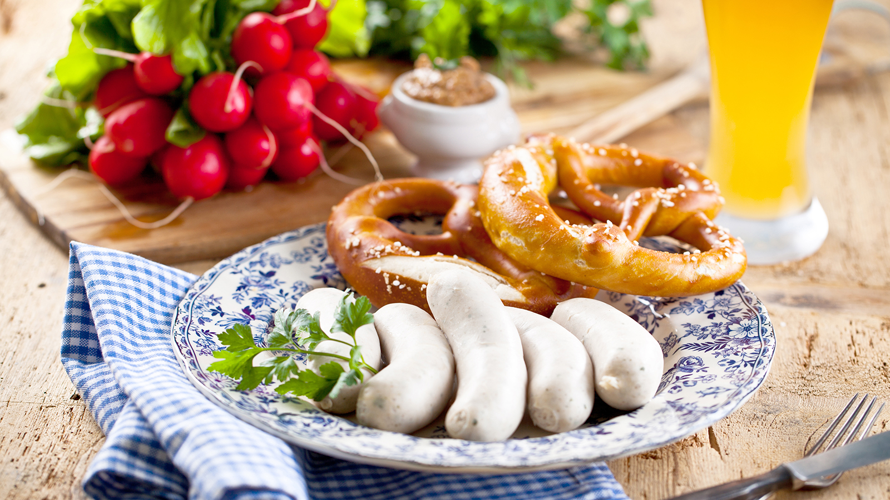
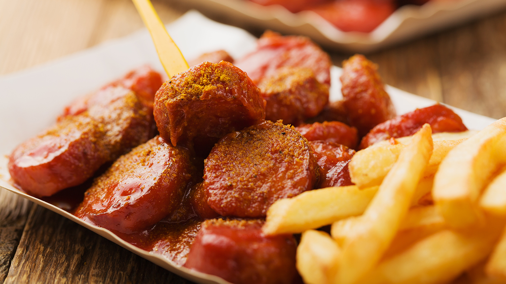
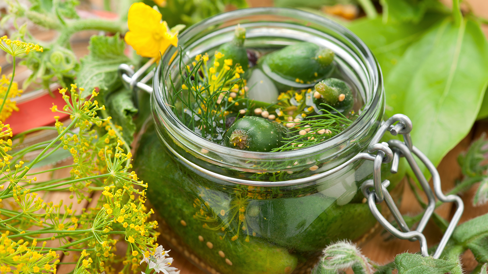
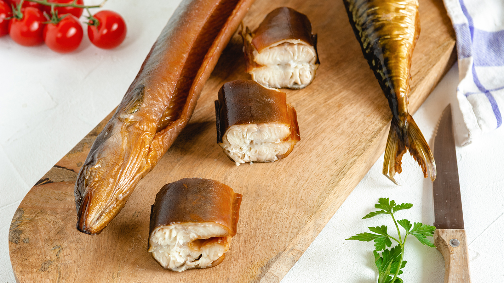

Niemcy
Od białej kiełbasy do szprewaldzkiego ogórka. Zabiorę cię na wycieczkę, która pozwoli poznać główne atrakcje niemieckiej kuchni.
Bawaria

Kiełbasa, precle i piwo na śniadanie: tego doświadczysz tylko w Bawarii. I jeszcze jedna rzecz, której nie może zabraknąć: słodka musztarda. Tradycyjnie, Bawarczycy nie jedzą swojej „Weißwurst” nożem i widelcem. Jeśli chcesz się nią delektować w prawdziwie bawarski sposób, musisz wysysać („zuzeln”) farsz z osłonki.
Berlin

70 milionów - tyle kiełbasek z curry jedzą berlińczycy rocznie. W sumie Niemcy zjadają w tym czasie nawet około 800 milionów kiełbas z curry. Nic dziwnego, ponieważ kultowe danie z pieczoną kiełbasą (Bratwurst), sosu curry i curry w proszku zajmuje od lat pięćdziesiątych XX wieku stałe miejsce w kuchni niemieckiej. A wynalazła je Herta Heuwer z Berlina w 1949 roku.
Brandenburgia

Ogórek jest integralną częścią regionu Szprewald, podobnie jak herbata śniadaniowa jest częścią Anglii. Dzisiaj chrupiące korniszony znane są na całym świecie. W całych Niemczech Szprewald zajmuje pod względem uprawy ogórków dopiero drugie miejsce za Dolną Bawarią, za to ogórek szprewaldzki zyskał status kultowego. Dlatego też „ogórek szprewaldzki” jest terminem chronionym przez UE i nie może być stosowany w odniesieniu do żadnych innych kiszonych ogórków.
Dolna Saksonia

W Dolnej Saksonii nie można przejść obojętnie obok węgorza. Obecnie dość rzadka ryba stała się popularnym przysmakiem, szczególnie w postaci wędzonej (Smoortaal). Mieszkańcy Dolnej Saksonii jedzą ją na różne sposoby: w czystej postaci z chlebem i masłem lub z dodatkami, takimi jak makaron lub sałatka ziemniaczana. Ale zawsze obowiązuje jedna zasada: wędzonego węgorza zjada się rękami. Po spożyciu mieszkańcy Dolnej Saksonii myją ręce wódką zbożową (Kornschnaps) - wtedy nie pachną już rybami.
 Włochy
Włochy Niemcy
Niemcy